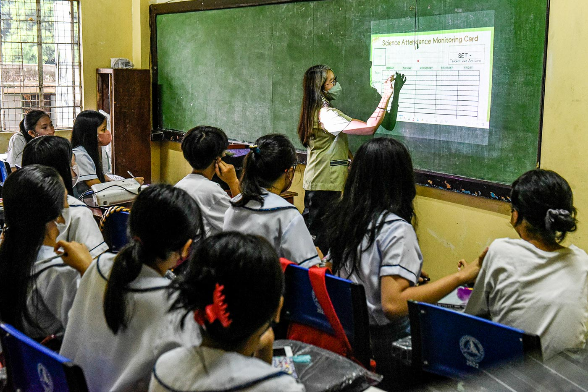
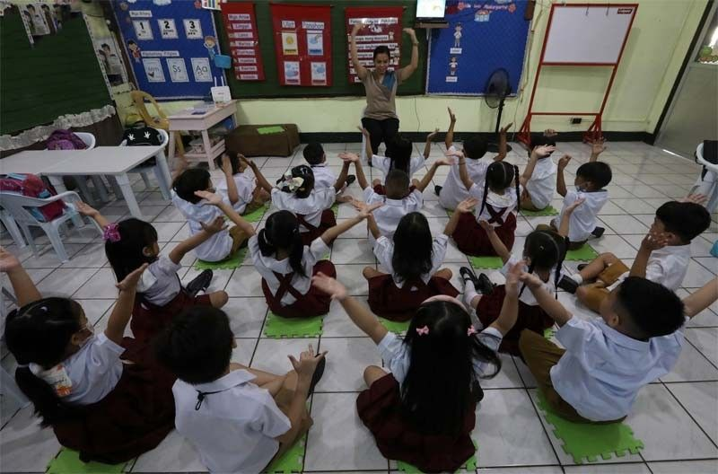

Filipino students literacy crisis — EdCom 2 report
National review highlights deepening reading gaps and urgent calls to address the literacy crisis among Filipino learners.
Project EmpowerED
Reading proficiency outcomes among Filipino students are analyzed by this project, and how socioeconomic and geographic factors contribute to differences in literacy performance across public schools is investigated.

Overview
The Philippines continues to experience severe literacy challenges, reflected in poor reading performance and significant educational disparities affecting low-income and rural students.
Use statistical and data-driven methods to identify patterns behind literacy inequality and provide evidence-based insights.
Literacy gaps affect future opportunities. Educational inequality is tied to structural barriers, and socioeconomic and geographic factors play major roles in who succeeds in reading and who is left behind.
Recent international education assessments have placed the Philippines among the lowest performing countries in reading comprehension. Students from low-income households or rural communities may face limited access to learning resources, fewer educational opportunities, and structural disadvantages that affect literacy development.

National review highlights deepening reading gaps and urgent calls to address the literacy crisis among Filipino learners.

Research underscores how widespread foundational reading deficits remain across the Philippine education system.
Multiple educational datasets are analyzed. Literacy outcomes are compared across demographic and geographic variables, and statistical methods are used to identify relationships and disparities.
International assessment of student reading performance and socioeconomic context.
Regional literacy assessment across Southeast Asian education systems.
National functional literacy and education statistics for the Philippines.
Project EmpowerED combines international educational assessments and national socioeconomic surveys to examine literacy outcomes in the Philippines and identify the factors associated with reading achievement.
Over 7,000 fifteen-year-old students from the Philippines and Southeast Asia were analyzed to evaluate reading proficiency and socioeconomic indicators.
More than 6,000 Grade 5 students were included to assess foundational literacy skills and educational outcomes across the region.
Approximately 35,000–40,000 households were analyzed to provide socioeconomic and educational indicators at the regional level.
All datasets were collected using multi-stage stratified random sampling to ensure representation across regions, school types, and urban–rural populations. Schools or barangays served as primary sampling units, while individual students and households served as secondary sampling units.
Data preprocessing involved importing proprietary statistical files, removing unnecessary metadata, converting datasets into CSV format, and isolating the Philippine and Southeast Asian cohorts relevant to the study.
Because student assessments and household surveys target different populations, direct row-level matching was not possible. Instead, regional proxy variables were created by aggregating student literacy scores and linking them to regional socioeconomic indicators such as household income and parental education.
The resulting regional datasets were analyzed using descriptive statistics, correlation analysis, and predictive modeling to identify literacy disparities and the socioeconomic factors most strongly associated with reading performance.
Project EmpowerED utilizes a multi-source framework that combines international student assessments with national socioeconomic survey data to analyze literacy outcomes in the Philippines from 2022–2025.
All baseline datasets employed multi-stage stratified random sampling to ensure statistical representation across regions, school classifications, and urban-rural divisions.
Schools or barangays functioned as primary sampling units, while individual students and households served as secondary sampling units.
Data cleaning involved processing proprietary statistical formats such as .sav files, removing metadata noise, and converting datasets into flat CSV structures suitable for analysis and deployment through Google Sheets.
Additional filtering procedures isolated the Philippine cohort and relevant Southeast Asian populations from the larger international datasets.
Because direct row-level linkage was impossible across datasets with different target populations, regional proxy variables were constructed.
Student performance scores from PISA and SEA-PLM were aggregated into regional averages and mapped to corresponding socioeconomic indicators extracted from FLEMMS, including household income and parental education levels.
The integrated regional datasets were analyzed through descriptive statistical profiling, correlation analysis, and predictive modeling.
This approach enabled the project to evaluate literacy disparities, quantify relationships between socioeconomic factors and academic performance, and establish a data-driven foundation for localized educational interventions.
Key insights from the statistical analyses, regional comparisons, and literacy outcome investigations conducted throughout the study.
Featured visualization
PISA 2022 comparisons show how Filipino reading scores align with other Southeast Asian countries and where the Philippines falls relative to regional benchmarks.
Household income and parental education correlate with reading scores—highlighting how economic disadvantage maps onto literacy achievement gaps.
Urban and rural public schools show measurable differences in literacy outcomes, reflecting uneven access to resources and support.
The Philippines ranks lowest among the analyzed Southeast Asian nations, recording an average reading score below 350 and falling behind neighboring countries across all major literacy benchmarks.
Socioeconomic status demonstrates a stronger relationship with reading achievement than parental education alone, emphasizing the importance of resources and learning environments.
Regions with higher urbanization consistently achieve stronger literacy outcomes, while low-urbanity areas exhibit significantly greater performance variability.
Structural barriers, unequal access to educational resources, and geographic disparities continue to contribute substantially to literacy challenges across the Philippines.
An analysis of reading literacy across selected Southeast Asian nations reveals a clear performance hierarchy, with the Philippines ranking at the bottom of the assessed cohort.
Singapore leads the region with mean reading scores exceeding 500, while Vietnam occupies a strong secondary position near 460. The Philippines records the lowest average reading score at below 350.
The correlation matrix demonstrates a strong relationship between parental education and socioeconomic status (r = 0.81).
Socioeconomic status exhibits a stronger correlation with reading performance (r = 0.56) than parental educational attainment alone (r = 0.45), indicating that access to resources and supportive learning environments play a larger role in literacy outcomes.
Highly urbanized regions maintain literacy rates ranging from 86% to 93%, whereas less urbanized areas display substantially greater variability and lower outcomes.
For the Philippines, this highlights the educational consequences of geographic inequality and limited access to learning opportunities in rural communities.
A Pearson correlation analysis produced r = 0.504, indicating a moderate positive relationship between urbanization and literacy rates.
The resulting p-value (0.0328) is below α = 0.05, providing evidence of statistical significance and supporting the hypothesis that urbanity contributes meaningfully to literacy outcomes.
Regression analysis produced a slope of 0.0712 and an R² value of 0.254, indicating that approximately 25.44% of literacy variation may be explained by differences in urbanization levels.
Predict reading proficiency using socioeconomic indicators derived from PISA 2022 data.
The machine learning component of the study focused on developing a predictive model that estimates students’ reading performance based on selected socioeconomic status (SES) indicators.
Using the Programme for International Student Assessment (PISA) dataset CY08MSP_STU_QQQ.SAV, the data was first filtered to include only Southeast Asian (SEA) countries. Data cleaning procedures were conducted to remove incomplete records, resulting in a final cleaned dataset of 45,575 samples.
Three SES-related variables were used as predictors:
The target variables were the PISA reading performance values from the PVREAD columns, representing students’ plausible reading literacy scores.
The dataset was divided into:
Several machine learning models were evaluated:
The Gradient Boosting model achieved the best overall performance:
Feature importance analysis showed:
These findings suggest that access to educational resources and home learning materials plays a substantially larger role in predicting reading achievement than the other SES indicators included in the model.
As part of the implementation of the developed machine learning model, the researchers created an interactive web-based prediction system hosted on this website.
Users may input values for:
The trained Gradient Boosting model then estimates a predicted reading score based on relationships learned from the PISA dataset.
To improve interpretability, predicted reading scores are automatically categorized into proficiency levels.
The developed model has practical implications for improving education in the Philippines. By identifying how socioeconomic factors influence reading performance, the system may help educators, researchers, and policymakers better understand which students may be at greater academic risk due to socioeconomic disadvantages.
The strong influence of HOMEPOS highlights the importance of educational resources and supportive home environments in shaping literacy outcomes.
Schools and local education agencies may use the model as a supplementary decision-support tool when identifying communities that could benefit from additional academic support, literacy interventions, educational materials, or socioeconomic assistance programs.
Insights from the model may also assist policymakers in guiding resource allocation and developing evidence-based educational policies that address inequality in learning opportunities.
Generating prediction...
Interpretation: —
Key takeaways, implications, and future directions emerging from Project EmpowerED.
The analyses and predictive modeling conducted in Project EmpowerED reveal that socioeconomic inequality and geographic disparities are among the primary drivers of the reading literacy crisis in Southeast Asia, particularly in the Philippines.
The Philippines ranks at the bottom of the assessed regional cohort, recording mean reading scores below 350 and trailing neighboring countries by a substantial margin.
Urbanization acts as a structural stabilizer for literacy outcomes, while low-urbanity regions experience considerably greater variability and educational disadvantage.
Machine learning analysis further demonstrates that access to educational resources, technology, and supportive home environments serves as a stronger predictor of literacy achievement than parental educational attainment alone.
The findings provide a data-driven understanding of how economic privilege influences educational success in the Philippines.
Contrary to the assumption that academic achievement depends solely on individual ability or teaching quality, the results indicate that material conditions such as access to books, internet connectivity, and supportive learning environments are among the strongest predictors of literacy outcomes.
The Philippines’ placement near the bottom of Southeast Asian literacy rankings further suggests that educational reform and socioeconomic intervention must be treated as interconnected priorities.
Future studies should incorporate localized variables such as regional school funding, student-to-teacher ratios, internet accessibility, and digital literacy indicators to improve predictive performance.
Local education agencies and schools may use the prediction platform as a supplementary diagnostic tool for identifying student groups that could benefit from literacy interventions and additional educational support.
Future versions of the platform may connect predicted proficiency levels with customized reading resources and intervention materials tailored to specific learner needs.